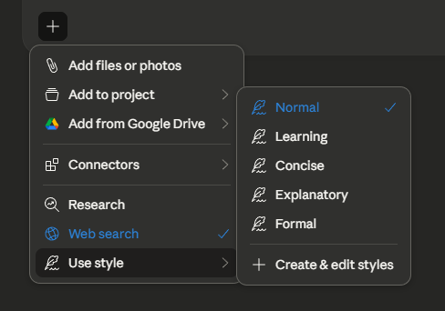
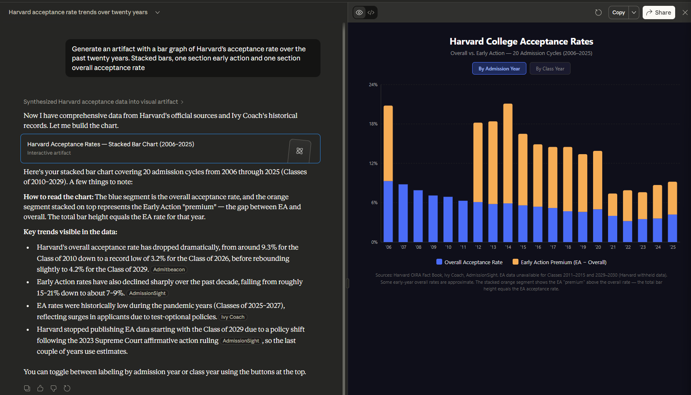
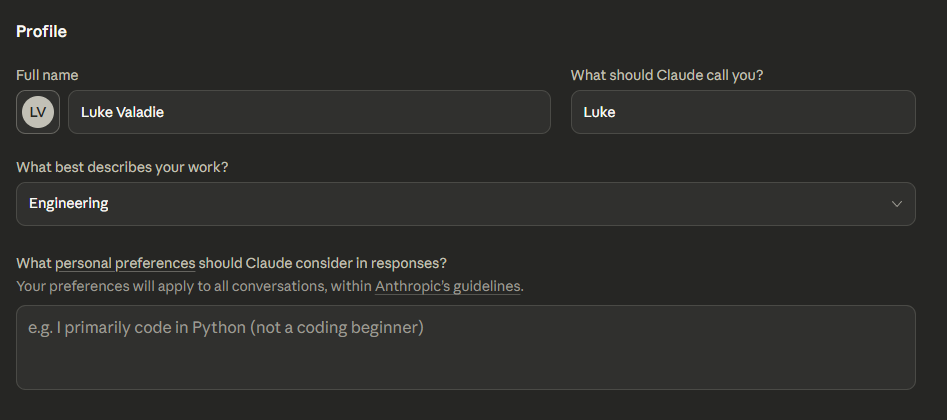
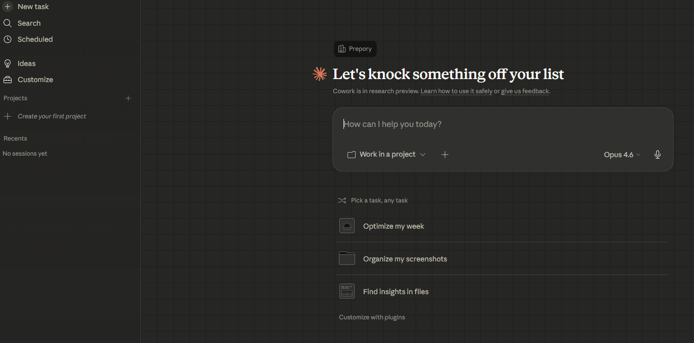

Getting Started
Before diving in, grab the desktop app. Some features (like memory and integrations) require it.
Download the desktop app
Claude works great in the browser, but the desktop app unlocks the full experience. Download it for your platform:
Available for Windows and macOS. Once installed, sign in with your Prepory Claude account.
Chat Basics
The chat interface is where you'll spend most of your time. Here's what matters.
Pick the right model
Click the model selector below the input to switch between models:

Search, tools & file uploads
The search and tools button (lower-left of input) is your control center for toggling extended thinking, web search, and styles. The + button handles file uploads: PDFs, spreadsheets, images, and more (up to 30 MB each).

Styles
Styles adjust Claude's tone and format. Four presets are built in (Normal, Concise, Formal, and Explanatory) and you can create custom ones from writing samples or descriptions.

Artifacts
When Claude creates something substantial (a document, a visualization, an interactive tool) it appears in a dedicated panel to the right. You don't need to know how to code. Just describe what you want and Claude builds it for you.
What can Claude create?
Iterate and share
Ask for changes and Claude updates the artifact in place. Flip through versions with the version selector. Hit Share to create a team-only link. Only authenticated Prepory members can view it.

Projects
Persistent workspaces where every conversation shares the same knowledge base and instructions.
The sidebar
Your home base for navigating chats, projects, and artifacts.

Create a project

Add knowledge & instructions
Upload documents to the knowledge base. Unlike single-chat uploads, these are available to every conversation in the project. Set project instructions to tell Claude what role to play, what format to use, or what terminology matters.

Share with teammates
When you share a project, everyone on the team gets access to the same knowledge base and instructions. That means Claude gives consistent, informed answers no matter who's asking. You don't need to re-upload files or re-explain context for each person.
Two permission levels:
- Can use: chat with the project's knowledge, but can't change the files or instructions
- Can edit: full control to add files, update instructions, and manage members

Memory & Preferences
Help Claude understand who you are so every conversation is tailored to you.
Profile preferences
Open Settings (click your initials, lower-left) and fill in your name, role, and communication preferences. Set them once and they apply across all conversations.

Memory
Memory lets Claude learn from your conversations over time: your projects, working style, and preferences. Toggle it on in Settings → Capabilities. You can review, edit, or delete memories at any time, or simply tell Claude to remember or forget things in conversation.

Cowork Desktop App
Instead of just answering questions, Cowork lets Claude take action. It can read your local files, search the web, run code, and deliver finished work.
What can Cowork do?
Cowork is an agentic mode in the Claude Desktop app. You describe an outcome and Claude handles the steps to get there. It can:
- Read and write files on your computer (only in folders you grant access to)
- Search the web for up-to-date information
- Run code in a safe, isolated environment
- Create documents like spreadsheets, presentations, and reports
- Connect to tools like Gmail, Google Drive, and Slack (if configured)
How it works
